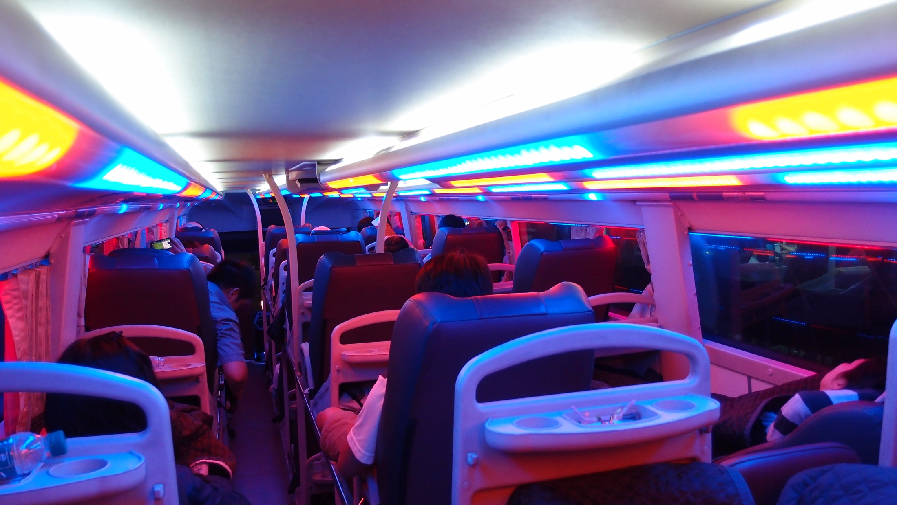
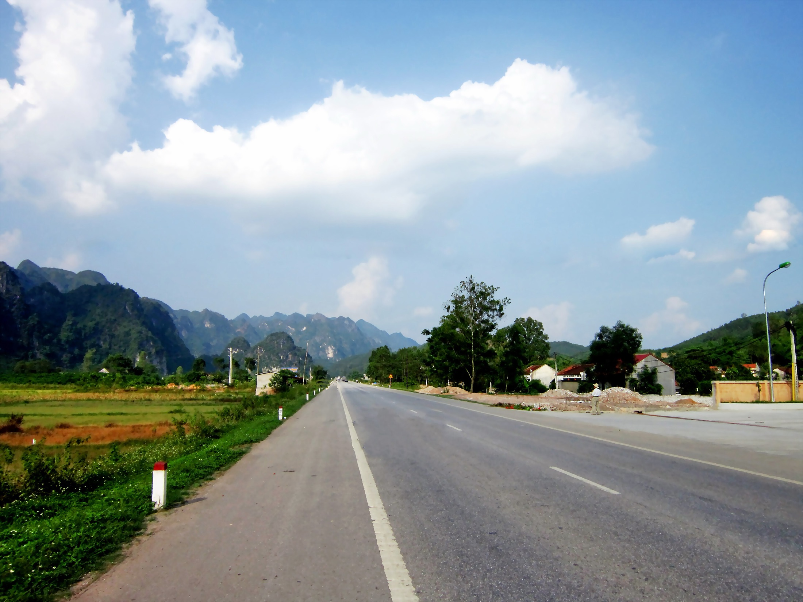
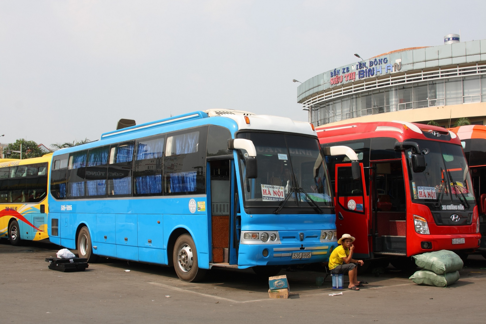

Trên xe giường nằm, cả xe được ngủ, trừ một người.
Xe Thành Bưởi tuyến Sài Gòn – Đà Lạt. Đèn trần tắt ngay sau khi xe rời bến.
Chớp mắt hay ngủ gật
Ai cũng chớp mắt, nên một khung hình nhắm mắt chưa nói lên điều gì. DriverGuard chỉ báo khi mắt nhắm liên tục 1,8 giây, đo bằng đồng hồ chứ không đếm khung hình, nên camera nhanh hay chậm thì ngưỡng vẫn vậy. Mốc “nhắm” cũng là của riêng bạn: 70% độ mở mắt đo trong 4 giây hiệu chuẩn.
0,4
1,8
Bảy dấu hiệu
-
Nhắm mắt kéo dài
Màn hình đỏ, rủi ro 90, khi mắt nhắm liên tục 1,8 giây. Nhắm từ 2 giây là luôn đỏ, bất kể điểm trước đó.
-
Đang dùng điện thoại
Màn hình đỏ, rủi ro 80, khi điện thoại nằm trong vùng quanh mặt và ngực 1,5 giây. Điện thoại để trên ghế thì không tính.
-
Quay đầu lệch hướng
Màn hình vàng, rủi ro 65, khi đầu lệch quá 30° so với tư thế chuẩn của chính bạn trong 2 giây.
-
Cúi đầu
Màn hình vàng, rủi ro 65, khi cúi quá 20° trong 2 giây, như lúc nhìn xuống lòng.
-
Không thấy khuôn mặt
Màn hình vàng, rủi ro 60, khi camera mất mặt 3 giây liền. Đang thấy điện thoại sát mặt thì không tính là vắng mặt.
-
Ngáp
Màn hình vàng, rủi ro 45, khi miệng mở rộng 2 giây. Mỗi lần ngáp còn được đếm cho dòng dưới.
-
Mệt mỏi tích lũy
Màn hình vàng khi thời gian nhắm mắt trong 60 giây gần nhất cộng số lần ngáp trong 5 phút vượt 50 điểm. Nhiều nhất một lần mỗi phút.


Quốc lộ 1A dài hơn 2.300 km, từ Lạng Sơn tới Cà Mau. Xe giường nằm trên đó thường chạy qua đêm.
Trái: quốc lộ 1A đoạn Chi Lăng, Lạng Sơn. Phải: xe giường nằm chờ chạy tuyến Hà Nội ở bến xe Miền Đông.
Nhắm mắt, xe đi bao xa?
40 m
Quãng đường xe chạy trong 1,8 giây mắt nhắm, đúng khoảng DriverGuard chờ để chắc bạn không chỉ chớp mắt. Cách tính: tốc độ ÷ 3,6 × 1,8.
Bấm một lần, rồi lái
Từ năm 1938 đã có phim dạy tài xế xe tải lái đêm. Cơn buồn ngủ thì vẫn ở đó.
Trích phim “Knights on the Highway”, 1938, lưu ở Internet Archive.
Thử với người thật
| Lần thử | Người thử làm gì | Màn hình tài xế | Kết quả |
|---|---|---|---|
| Phiên 3, 07/10/2026 | Ngồi tự nhiên, nhìn thẳng | Vàng 0,6 giây, lúc người thử nhắm mắt thật 1,2 giây | Đúng thiết kế |
| Chớp mắt bình thường | Không đổi | Đúng | |
| Nhắm mắt, giữ 7 giây | Vàng ở giây 2,8, rồi đỏ: nhắm mắt kéo dài | Đúng | |
| Quay sang trái | Vàng ở giây 3,8: quay đầu lệch hướng | Đúng | |
| Quay trái tới mép cửa sổ | Vàng ở giây 7,1, sát cuối pha | Đúng, chậm | |
| Quay sang phải | Giữ vàng suốt pha | Đúng | |
| Quay phải tới mép cửa sổ | Giữ vàng suốt pha | Đúng | |
| Cúi đầu nhìn xuống lòng | Vàng: cúi đầu | Đúng | |
| Há miệng như ngáp | Vàng ở giây 3,8: ngáp | Đúng | |
| Đếm to từ 1 đến 15 | Không đổi | Đúng | |
| Cười thật to | Không đổi | Đúng | |
| Cầm điện thoại trước ngực | Không đổi trong pha, đỏ 0,6 giây sau khi hạ máy | Trễ | |
| Đưa điện thoại sát mặt | Đỏ suốt pha: đang dùng điện thoại | Đúng | |
| Phiên 4, 08/10/2026 | Ngáp to rồi nhắm mắt khoảng 1 giây, 4 lần | Báo ngáp cả 4 lần, báo nhắm mắt 2 lần | 4/4 ngáp |
| Ngáp nhẹ, 2 lần | Không báo | Sót 2/2 | |
| Chỉ nhắm mắt khoảng 1 giây, 2 lần | Không báo | Đúng | |
| Bộ ảnh có sẵn | State Farm: 1.500 ảnh tài xế trong xe | Tìm điện thoại bằng YOLO26x | F1 0,88 |
| Pointing’04: 13.950 ảnh đầu quay nhiều hướng | Nhận ra quay đầu, gần như không báo nhầm | Bắt 53% | |
Màn hình đổi màu đúng ở 8 trên 9 pha cần báo; chớp mắt, nói chuyện và cười không làm nó đổi. Một người thử, camera laptop, trong nhà, mỗi pha 7 giây, thời điểm tính từ lúc lệnh hiện lên. Nhật ký thí nghiệm ghi 9/9 vì tính cả lúc hệ thống thấy điện thoại mà chưa báo; bảng này tính theo màu màn hình.
- Đề tài
- DEV-02
- Nhóm
- Ngũ Đại Thiên Vương
- Chương trình
- Capstone K4, Track 4
DriverGuard chạy trọn trên một máy tính đặt trong xe. Camera gửi 30 khung hình mỗi giây; MediaPipe tìm 478 điểm trên khuôn mặt để đo độ mở mắt, độ mở miệng và góc đầu, còn YOLO26x tìm điện thoại 5 lần mỗi giây trên một luồng riêng. Máy trạng thái chỉ báo khi tín hiệu kéo dài đủ lâu, rồi điểm rủi ro hạ dần sau khi nguy cơ qua đi. Hình không được lưu và không rời khỏi máy.
Đã đo
- Phiên người thật, pha 7 giây8/9 pha
- Đổi màu khi chớp mắt, nói, cười0 lần
- Điện thoại trong xe, State FarmF1 0,88
- Điện thoại, ảnh COCOF1 0,76
- Quay đầu, Pointing’0453%
- Camera và tìm mặt30 FPS
- Thời gian tìm mặt mỗi khung27 ms
- Tìm điện thoại, luồng riêng5–6 FPS
- Kiểm thử tự động lõi AI59 test
Còn thiếu
- Người thử thứ haiChưa có
- Cabin xe thậtChưa thử
- Hồng ngoại, đeo khẩu trang13% khung
- Cúi đầu khi mất mặtCòn yếu
- Ngáp nhẹCòn sót
- Tay rời vô lăngChưa đưa vào
- Ngáp rồi nhắm mắt ngắnĐang thử
- Jetson, ONNX, TensorRTChưa đo